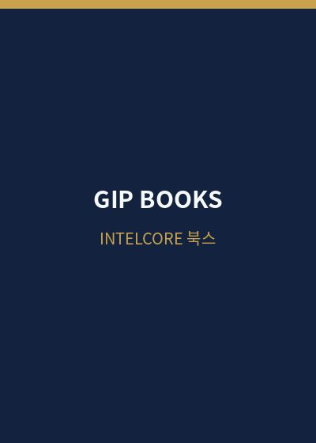

거시 관점
이슈를 고르면 관점별 해설이 나타납니다.
- 확인할 지표(이름만 안내)
- 스스로 던질 질문
One Story, Four LensesMacro · Industry · Policy · InvestorJudge the news for yourself
하나의 이슈를 거시·산업·정책·투자자 관점으로 나눠 스스로 판단하는 힘을 기릅니다.
하나의 이슈를 네 관점으로 나누고, 공식 통계 원문으로 확인한 뒤 판단은 독자가 내립니다. INTELCORE는 판단을 팔지 않고 검증하는 법을 전합니다.
40년 경제 기자가 만든 INTELCORE는, 경제를 처음 공부하는 분부터 실무자까지 하나의 이슈를 거시·산업·정책·투자자 관점으로 나눠 스스로 판단하는 힘을 기르도록 돕습니다. 판단은 팔지 않고, 검증하는 법을 전합니다.
이 페이지의 섹션·코너를 바로 찾아 드립니다.
예시 이슈를 고르고 네 갈래 빛줄기 중 하나를 누르세요. 각 관점에서 무엇을 보고, 어떤 지표를 확인하며, 스스로 던질 질문이 무엇인지 정리해 드립니다. 수치는 싣지 않고 공식 통계 원문을 찾는 경로만 안내합니다.
이슈를 고르면 관점별 해설이 나타납니다.
기준일 예시 이슈 해설이며 특정 시점의 시장 전망이 아닙니다.원문 확인 경로: 한국은행 경제통계시스템(ECOS) · 통계청 국가통계포털(KOSIS) · 금융위원회·기획재정부 보도자료
그레이엄부터 우드까지 104인의 철학·차례·한계·원칙을 수록했습니다. 원칙 문장은 실제 어록 인용이 아니라 GIP 자체 집필입니다. 아래는 대표 15인입니다.
시장가격과 내재가치를 분리하고, 그 격차(안전마진)에서 위험을 통제하는 사고를 정립했다.
그레이엄의 가치투자에 '질(質)'을 더해, 오래 이기는 우량기업을 합리적 가격에 사서 장기 보유한다.
다학제 '정신모형 격자'로 사고하고, 어리석음을 피하는 것을 우선한다.
일상에서 발견한 기업을 조사로 검증한다. 이해할 수 있는 사업, 성장 대비 저평가(PEG)를 본다.
소수의 위대한 성장기업을 깊이 조사해 장기 보유한다. 질적 요소를 계량 못지않게 중시한다.
재무의 질과 가격·거래량의 힘을 결합한 CANSLIM 체계로 주도주를 가려내는 법을 제시했다.
'최대 비관의 지점'을 살피고, 국경을 넘어 저평가를 찾는 글로벌 역발상.
시장을 이기려는 대신 시장을 소유한다. 비용과 세금을 최소화하는 인덱스 장기투자.
경제를 '기계'로 이해하고, 어떤 환경에서도 견디는 균형 포트폴리오와 원칙 기반 의사결정을 추구한다.
예측이 아니라 '지금 사이클의 어디인가'를 읽는다. 리스크는 영구 손실 가능성이다.
부의 결과는 지능보다 행동과 인내, 리스크를 견디는 태도에서 갈린다는 관점을 강조한다.
추세와 수급의 흐름을 관찰하는 원리. GIP는 이를 타이밍 신호가 아닌 시장의 힘을 읽는 관찰 틀로 다룬다.
한국 시장의 특수성을 고려해 입문자 눈높이에서 투자의 본질을 설명하는 실무적 관점.
AI·자율주행·게놈 등 파괴적 혁신에 고신념으로 집중하는 현대적 성장 전략. 높은 변동성이라는 한계도 함께 배운다.
14인 대가를 다섯 학파(가치·질/혁신성장·추세수급·구조배분·심리/입문)로 엮어 방법들이 서로를 어떻게 보완하는지 정리했다.
입문자부터 전문가까지 레벨별 강의입니다. L1~L2 25강을 마치면 이수자로 인정합니다. 핵심 7개 모듈은 다음과 같습니다.
계좌 개설부터 호가·체결·자금 흐름까지.
거래 제도와 세금의 기본기.
수수료·회전율이 결과에 미치는 영향.
분산과 자산배분의 원칙.
위험과 레버리지 관리.
매매 기록과 복기 습관.
정보를 거르고 배우는 법.
주식대학 커리큘럼과 이어지는 산업 리서치 과정입니다. 옛 MegaSector 30의 섹터 매트릭스·6대 축·자본 이동 국면으로 산업을 읽는 법을 배웁니다. 섹터를 누르면 핵심 동인·확인 지표·위험 요인을 볼 수 있습니다. 교육·참고용이며 종목 추천이 아닙니다.
INTELCORE의 핵심 교육·정보 서비스입니다. 모두 교육·참고용이며 매매 권유가 아닙니다.
| 번호 | 서비스 | 이런 분께 |
|---|---|---|
| 01 | 경제 인텔리전스 리포트 프리즘 브리핑 방식의 이슈 해설 리포트 | 뉴스를 구조적으로 읽고 싶은 직장인·경영자 |
| 02 | 주식대학 100강 커리큘럼 15모듈 + 40권 e-book | 투자의 기초부터 체계적으로 배우려는 분 |
| 03 | 투자 대가 104인 교과서 철학·차례·한계·원칙 정리 | 여러 투자 철학을 비교해 나만의 원칙을 세우려는 분 |
| 04 | 24개국 시장 해설 국가별 시장 구조와 변수 해설 | 해외 시장을 공부하려는 분 |
경제 환경과 업종 변화를 네 갈래로 분석해 무엇이 바뀌는지 짚습니다.
모든 리포트에 작성자·작성일·출처를 적습니다. 투자 판단은 독자의 몫이며, GIP 패밀리의 분석 도구로 바로 이어집니다.
GIP 24개국 네트워크 기준으로 지수·거래 시간·업종·환율 구조를 기준일과 함께 해설합니다.
시장을 움직이는 변수를 데이터로 해설하고, 수치마다 출처와 기준일을 붙입니다.
장 마감 후 자료를 모아 CANSLIM 7대 지표로 읽는 법을 배웁니다. 매매 신호가 아닌 관찰 교육입니다.
차세대 30대 산업의 구조와 자본 이동을 리서치합니다.
거시·업종·수급·공시를 정량으로 읽는 교육 도구입니다.
데일리머니 대기자 조찬우(Cho Chan Woo)의 칼럼과 GIP 콘텐츠 엔진의 산출물을 분야별로 모았습니다. 칼럼 원문은 데일리머니와 INTELCORE 블로그에서 확인하세요.
창간 직후 외환위기를 버텨 낸 경험에서 나온 생존의 삼각축 — 돈·사람·신뢰. 위기 때 금융을 읽는 기본기를 다룹니다.
1997년 '금융 강국' 기치로 창간한 매체의 시선으로 한국 금융의 구조와 과제를 짚는 연재 분야입니다.
여의도 현장 취재 경험을 바탕으로 정책 발표문과 실제 집행 사이의 간극을 읽는 법을 다룹니다.
AI 전환이 일과 산업을 어떻게 바꾸는지, 현장에서 무엇부터 준비해야 하는지를 다룹니다. 실행은 BIZAUTO로 이어집니다.
데일리머니 칼럼을 보완한 심층 롱폼을 INTELCORE 블로그에 발행합니다.
칼럼의 핵심 인사이트를 소셜 채널용 짧은 글로 가공합니다.
당일 콘텐츠를 하나로 묶어 각 채널에 송출합니다. 발행 시점과 링크는 각 채널에서 확인할 수 있습니다.
데일리머니에서 칼럼 원문 보기INTELCORE 블로그칼럼 피드 구성 업데이트
국회일보사(출판사 신고 제2026-000457호)가 펴내는 1,000권 라인업입니다. 열 개의 큰 테마 아래 전문성과 대중성을 함께 갖춘 책을 차례로 출간합니다. 대표 도서 표지부터 먼저 공개합니다.

국회일보사가 확정한 실제 표지 9권입니다. 「AGI 금융 대전환」 등 나머지 책은 표지가 완성되는 대로 이곳에 추가합니다.
전자책 15,900~59,900원(소장판 25,900~69,900원, 권별 정가) · 2027년 1~2월 순차 출간 예정
편집국 사실 확인과 품질 검사를 거쳐 원고가 완성된 책입니다(권당 205쪽 이상, 100가지 실전 스킬). 실물 표지가 확정된 책을 앞에 두고, 나머지는 글자 표지로 먼저 보여 드립니다.
전자책 15,900~59,900원(소장판 25,900~69,900원, 권별 정가) · 2027년 1~2월 순차 출간 예정 · 출간 알림은 아래 신청란에서 받을 수 있습니다.
결제는 ISBN 발급·판매 개시 후 열립니다. 지금은 '결제하기'를 누르면 사전 예약으로 접수됩니다.
INTELCORE 북스 본진의 1차 도서 10권입니다. 「AGI 금융 대전환」 테마에서 먼저 선보이며, 권마다 실전 스킬 100개를 담았고 무료 공개 10스킬로 미리 읽어 볼 수 있습니다. 결제 연동 전이므로 지금은 출간 알림·사전 예약 신청만 받으며, ISBN 발급 후 판매 개시합니다.
PDF·EPUB 전자책.
PDF·한글(HWP)·JPG 쪽 이미지 + 별책 부록·체크리스트·AI 질문 모음
닷컴 버블과 무엇이 같고 무엇이 다른가
출간 예정(ISBN 발급 후 판매 개시)
AGI 시대에 주목할 기업 100곳 분석
출간 예정(ISBN 발급 후 판매 개시)
AGI 시대 돈은 누구에게서 누구에게로 가는가
출간 예정(ISBN 발급 후 판매 개시)
맡길 것과 지킬 것을 구분하는 법
출간 예정(ISBN 발급 후 판매 개시)
AGI 에이전트가 지점과 창구를 대체하는 날
출간 예정(ISBN 발급 후 판매 개시)
AI 에이전트가 1초 만에 예금을 옮기는 시대
출간 예정(ISBN 발급 후 판매 개시)
AGI가 노동 소득을 대체할 때 살아남는 재테크
출간 예정(ISBN 발급 후 판매 개시)
같은 AI를 써도 결과가 다른 이유
출간 예정(ISBN 발급 후 판매 개시)
AI를 지휘하는 투자자가 이긴다
출간 예정(ISBN 발급 후 판매 개시)
AGI 시대 부의 격차는 교육에서 시작된다
출간 예정(ISBN 발급 후 판매 개시)
다섯 문항으로 지금의 투자 지식 수준을 확인하고, 나에게 맞는 다음 학습 코너를 추천받으세요. 결과는 이 화면에만 표시되며 저장·전송되지 않습니다.
주당 학습 시간과 기간을 넣으면 총 학습 시간을 계산합니다. 학습 계획을 세우기 위한 참고용입니다.
40년 경제 기자가 만든 GIP의 경제 인텔리전스·투자 교육 허브입니다. 프리즘 브리핑, 칼럼, 주식대학, 투자 대가 교과서, INTELCORE 북스를 교육·정보 목적으로 제공합니다.
아니요. 금융투자업(투자자문·투자일임) 비인가 교육·정보 서비스이며 특정 종목·상품의 매매를 권유하지 않습니다.
브리핑은 확인할 지표의 이름과 공식 통계 경로만 안내합니다. 실제 수치는 한국은행 경제통계시스템, 통계청 KOSIS 등 원문에서 기준일과 함께 확인하세요.
INTELCORE가 경제 환경을 분석하면, BIZAUTO가 중소기업 현장의 업무 자동화·AI 전환으로 실행을 돕는 One-Two Punch 구조입니다.
정부 지원 연계
사업 분야에 맞는 지원사업, 받는 조건 10, 신청 업무 흐름 7단계를 한 화면에 정리했습니다. 2026 공고 기준이며 신청 전 원문을 확인합니다. 대리 신청·성공보수는 하지 않습니다.
0 / 10 충족
1단계 참여 식품 파트너 300곳의 매출이 전년 동기 대비 평균 68% 늘었습니다.
출처: 인사이트, 2026-09-162025년 33개사를 육성했고, 일반 분야 기준 매출 437억 원·고용 64명·투자 18억 원을 기록했습니다.
출처: 한경 잡앤조이, 2026-01고용노동부 2025 고용영향평가 발표회에서 정부의 단계별 지원이 창업기업 스케일업에 기여했다는 결과가 나왔습니다.
출처: 노컷뉴스2026-11 출판사 신고(강남구청), 사업자등록 정정·통신판매업 신고 완료. SW·AI 신규 법인 설립을 검토 중이며, 아직 정부 지원 수혜 실적은 없습니다 — 수혜가 확정되면 이 자리에 공개합니다.
출처: GIP 자체 기록사례 수치는 언론 보도 기준입니다. 지원사업 선정과 성과를 약속하지 않습니다. 문의: 중소기업 통합콜센터 1357.
경쟁력 10
GIP 홈페이지 공통 기준 10가지를 이 사이트에 맞게 적용했습니다. 항목마다 실제 위치로 바로 갈 수 있습니다.
「경제를 네 가지 관점으로 읽는다」 — 거시·산업·정책·투자자
바로 보기 →100강 주식대학, 104인 투자 대가, 30대 산업 리서치를 숫자로
바로 보기 →프리즘 브리핑 무료 열람
바로 보기 →기자의 취재 관점 + 교과서식 커리큘럼 결합 — 증권사 리포트와 다른 교육 전용
바로 보기 →40년 경제기자 「조찬우의 직설」 칼럼과 저서
바로 보기 →강좌·도서 가격과 수강 범위를 표로 공개
바로 보기 →종목 추천·매매 신호 없음, 비인가 교육 고지
바로 보기 →브리핑·칼럼 날짜 표시, 매일 갱신
바로 보기 →Q-Lens·StockRadar·Policy Fund로 바로 연결
바로 보기 →수강 상담·AI 상담 1클릭
바로 보기 →주식대학 수강, 기업용 경제 인텔리전스 리포트, BIZAUTO 연계 상담을 신청하세요. 상담 응답은 평균 1영업일 이내를 목표로 합니다.
상담은 교육 과정·서비스 안내를 위한 것이며 개별 종목·상품에 대한 투자 상담을 하지 않습니다.
INTELCORE는 국회일보사가 운영하는 GIP의 경제 인텔리전스 허브입니다.
판단은 팔지 않고 검증만 전한다.
없는 것을 있다고 표시하지 않는다.
모든 숫자에 출처와 기준일을 붙인다.
본 사이트의 정보는 교육·참고 목적입니다. INTELCORE는 금융투자업 비인가 교육·정보 서비스로, 특정 종목의 매매를 권유하거나 투자자문을 제공하지 않습니다.
제1조(목적) 이 약관은 국회일보사(Assembly Daily News)(이하 '회사')가 운영하는 INTELCORE 홈페이지와 관련 서비스(전자책·온라인 강좌·회원제·상담·자료 제공, 이하 '서비스')의 이용 조건과 절차, 회사와 이용자의 권리·의무를 정합니다.
제2조(서비스의 성격) 서비스는 경제·금융 교육과 정보 제공을 위한 것이며, 금융투자업(투자자문·투자일임·투자매매·중개) 인가를 받은 서비스가 아닙니다. 특정 금융상품의 매수·매도를 권유하지 않으며, 투자 판단과 그 결과의 책임은 이용자 본인에게 있습니다.
제3조(계약의 성립) 이용자가 상품 정보와 이 약관·환불 정책을 확인하고 결제를 마치면 이용 계약이 성립합니다. 회사는 결제 완료 후 이메일 또는 화면으로 구매 내용을 알립니다.
제4조(회원제 이용) 월 회비형 회원제는 매월 같은 날 자동 결제되며, 이용자는 다음 결제일 전까지 언제든 해지할 수 있습니다. 해지하면 다음 결제부터 청구되지 않고, 이미 결제한 기간은 그 기간이 끝날 때까지 이용할 수 있습니다.
제5조(이용자의 의무) 이용자는 서비스로 받은 전자책·강좌·자료를 회사의 허락 없이 복제·배포·재판매할 수 없습니다. 콘텐츠의 저작권은 회사 또는 정당한 권리자에게 있습니다.
제6조(서비스의 변경·중단) 회사는 운영상·기술상 필요한 경우 서비스 내용을 바꿀 수 있으며, 이용자에게 불리한 변경은 시행 7일 전까지 홈페이지에 알립니다.
제7조(분쟁 해결) 서비스와 관련한 분쟁은 회사 고객 창구(news@dailypress.co.kr)에서 먼저 협의하며, 협의가 되지 않으면 관계 법령과 민사소송법에 따른 관할 법원에서 해결합니다.
부칙 — 이 약관은 2026년 11월 16일부터 시행합니다.
청약철회(구매 취소) 이용자는 「전자상거래 등에서의 소비자보호에 관한 법률」에 따라 결제일로부터 7일 이내에 청약을 철회할 수 있습니다.
디지털 콘텐츠의 예외 전자책 파일을 내려받았거나 온라인 강좌를 재생하는 등 콘텐츠 제공이 시작된 뒤에는 같은 법 제17조 제2항에 따라 청약철회가 제한될 수 있습니다. 회사는 구매 전에 무료 미리보기(전자책 10스킬 무료 공개, 강좌 맛보기)를 제공해 이 사실을 미리 알립니다.
회원제 환불 결제 후 이용 기록이 없으면 7일 이내 전액 환불합니다. 이용 기록이 있으면 이미 이용한 기간을 뺀 나머지 기간을 일할 계산해 환불합니다.
상담·교육 서비스 일정이 확정된 상담·교육은 시작 2일 전까지 취소하면 전액, 그 이후에는 실제 진행 분량을 뺀 금액을 환불합니다.
환불 방법·기간 환불은 결제한 수단으로 처리하며, 회사가 요청을 받은 날부터 3영업일 안에 결제 취소를 요청합니다. 카드사·결제대행사 사정에 따라 실제 반영까지 시간이 더 걸릴 수 있습니다. 문의: news@dailypress.co.kr
1. 수집하는 개인정보 상담·문의 신청 시 이름, 연락처(전화번호 또는 이메일), 문의 내용을 받습니다. 유료 결제 시에는 결제 처리에 필요한 정보가 결제대행사를 통해 처리되며, 회사는 카드번호 등 결제수단 정보를 저장하지 않습니다.
2. 이용 목적 상담 답변, 구매 내역 안내와 콘텐츠 제공, 환불 처리, 법령상 의무 이행에만 씁니다. 동의 없이 광고 목적으로 쓰지 않습니다.
3. 보유 기간 상담 정보는 상담 완료 후 1년 동안 보관한 뒤 파기합니다. 거래 기록은 「전자상거래법」에 따라 계약·결제·환불 기록 5년, 소비자 불만·분쟁 처리 기록 3년 동안 보관합니다.
4. 제3자 제공·처리 위탁 법령에 근거가 있거나 이용자가 동의한 경우를 빼고 개인정보를 제3자에게 제공하지 않습니다. 결제 기능을 도입하면 결제 처리를 위탁하는 결제대행사 이름을 이 방침에 추가해 알립니다.
5. 파기 보유 기간이 끝난 정보는 지체 없이 파기하며, 전자 파일은 복구할 수 없는 방법으로 지웁니다.
6. 이용자의 권리 이용자는 언제든 자신의 개인정보 열람·정정·삭제·처리정지를 요구할 수 있으며, 회사는 지체 없이 조치합니다.
7. 자동으로 수집되는 정보 이 홈페이지는 회원 가입·로그인 기능이 없으며, 방문자를 식별하는 쿠키나 광고 추적 도구를 쓰지 않습니다. 화면 설정(글자 크기·테마 등)은 이용자 브라우저에만 저장되며 회사로 전송되지 않습니다.
8. 국외 이전 회사는 이용자의 개인정보를 국외로 이전하지 않습니다. 해외 결제 수단을 도입하게 되면 이전받는 자·국가·항목을 이 방침에 미리 알립니다.
9. 안전성 확보 조치 개인정보 취급 인원 최소화, 접근 권한 관리, 비밀번호 설정, 보관 기간 경과 정보의 지체 없는 파기 등 관계 법령에서 정한 조치를 시행합니다.
10. 개인정보 보호책임자 조찬우(대표) · news@dailypress.co.kr
11. 권익 침해 구제 개인정보 침해에 관한 상담·신고는 개인정보분쟁조정위원회(1833-6972, kopico.go.kr), 개인정보침해신고센터(국번 없이 118, privacy.kisa.or.kr), 대검찰청(1301), 경찰청(국번 없이 182)에 할 수 있습니다.
이 방침은 2026년 11월 16일부터 시행합니다.
상호 국회일보사(Assembly Daily News) · 서비스 INTELCORE · 대표 조찬우 · 주소 서울특별시 강남구 강남대로92길 31, 6층 107호(역삼동) · 사업자등록번호 868-15-02223 · 통신판매업 신고 완료(사업자 정보 확인) · 문의 news@dailypress.co.kr
교육·정보 안내입니다. 특정 종목·상품의 매수·매도를 권유하지 않으며 수익을 약속하지 않습니다. 개인정보(주민번호·계좌번호)는 입력하지 마세요.